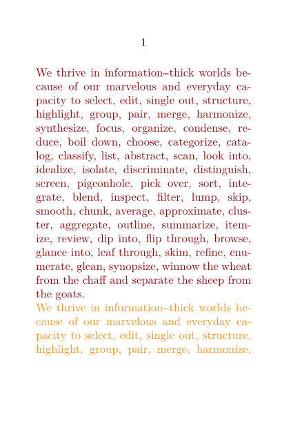
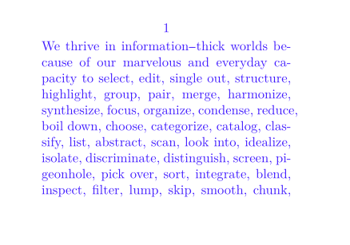
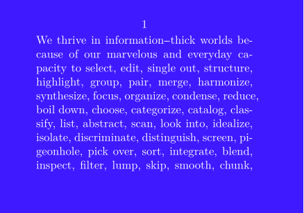
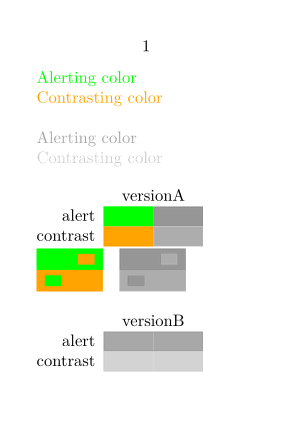

Contents
- 1 Predefined colors
- 2 Use predefined colors
- 3 Use color components
- 4 Commands with color option
- 5 Changing color of an entire document
- 6 Changing background color of page
- 7 Disabling color in a document
- 8 Highlighting words
- 9 Using colors in MetaPost
- 10 Defining palettes and switching
- 11 External references
Predefined colors
The following predefined colors are loaded in ConTeXt (see colo-imp-rgb.mkiv).
| Name | Color | Name | Color | Name | Color | Name | Color |
|---|---|---|---|---|---|---|---|
| black | white | ||||||
| gray | lightgray | middlegray | darkgray | ||||
| red | lightred | middlered | darkred | ||||
| green | lightgreen | middlegreen | darkgreen | ||||
| blue | lightblue | middleblue | darkblue | ||||
| cyan | middlecyan | darkcyan | |||||
| magenta | middlemagenta | darkmagenta | |||||
| yellow | middleyellow | darkyellow |
Other Predefined colors can be loaded.
Use predefined colors
To color text, use \color or \startcolor
\color[defined-color]{ ... text ... }
\startcolor[defined-color] ... text ... \stopcolor
where defined-color is a color defined using \definecolor. For example, darkred is one of the predefined colors. So, we can use:
-
Three \color[darkred]{cool} cats
or
-
\setuppapersize[A7] \setupalign[tolerant] \definecolor [brightorange] [c=0, m=.4325, y=.9286, k=.0118] \starttext \startcolor[darkred] \input tufte \stopcolor \startcolor[brightorange] \input tufte \stopcolor \stoptext
- 
Use color components
It is also possible to use RGB or CMYK or hex values to color text. The syntax for these is
\colored[settings]{... text ...}
where settings are the same settings as used by \definecolor. For example:
-
Three \colored[r=0.1, g=0.8, b=0.8]{colorful} cats
Commands with color option
Often, there is no need to use the color commands directly. Almost all ConTeXt commands accept a color key, and you can use color=defined-color. For example,
- To color the section titles red, use
\setuphead[color=red]
- To color the footnotes red, use
\setupfootnotes[color=red]
etc…
Changing color of an entire document
To change the main text color of the document use
\setupcolors[textcolor=defined-color]
For example,
-
\setuppapersize[A8,landscape] \definecolor[bluu][r=.25, g=.1, b=1] \setupcolors[textcolor=bluu] \starttext \input tufte \stoptext
- 
Changing background color of page
The background color of the page can be changed using
\setupbackgrounds[page][background=color,backgroundcolor=defined-color]
-
\setuppapersize[A8,landscape] \definecolor[bluu][r=.25, g=.1, b=1] \setupbackgrounds [page] [background=color, backgroundcolor=bluu] \setupcolors[textcolor=white] \starttext \input tufte \stoptext
- 
Disabling color in a document
\setupcolors[state=stop]
Highlighting words
It’s usually bad style to use explicit color switches in the text. It’s better to define a semantic command that takes care of the color switching. For example, instead of using \color[red]{important text}, define
-
\definehighlight[important][color=red] This is an \important{important text} here.
-

Using colors in MetaPost
A color defined in TeX is available in MetaPost using \MPcolor.
-
\definecolor[highlight][r=0.8,g=0.8,b=0] \color[highlight]{Highlighted text in TeX} \startMPcode label("Highlighted text in MetaPost", origin) withcolor \MPcolor{highlight}; \stopMPcode
Note that \MPcolor{...} behaves similar to a color primitive in MetaPost. For example, the following is valid MetaPost code.
color myColor; myColor = 0.5[\MPcolor{highlight}, white];
For more further reading: Color in MetaPost.
Defining palettes and switching
Colors can be grouped in palettes with \definepalet. The colors in such a palette can have colorful names, but best is to use names that specify their use, like important or danger.
The palette can then all be activated at once with \setuppalet.
To inspect the palet, or to compare its colors against each other, use \showpalet and \comparepalet.
-
\setuppapersize[A8] \usecolors[x11] \definepalet [versionA] [alert=green,contrast=orange] \definepalet [versionB] [alert=darkgray,contrast=lightgray] \starttext \setuppalet [versionA] \color[alert]{Alerting color}\\ \color[contrast]{Contrasting color} \blank[line] \setuppalet [versionB] \color[alert]{Alerting color}\\ \color[contrast]{Contrasting color} \blank[line] \showpalet [versionA] [vertical,name,number] \comparepalet [versionA] \blank[line] \showpalet [versionB] [vertical,name,number] \comparepalet [versionB] \stoptext
- 
External references
- Paletton - website to choose color palettes
- ColorBrewer - website to choose colors for maps and graphics
- The Complete Color Harmony , Tina Sutton, Bride M Whelan. Rockport Publishers (2004). ISBN 978-1592530311 (recommended in the mailing list)
- Color-wheel from color.adobe.com